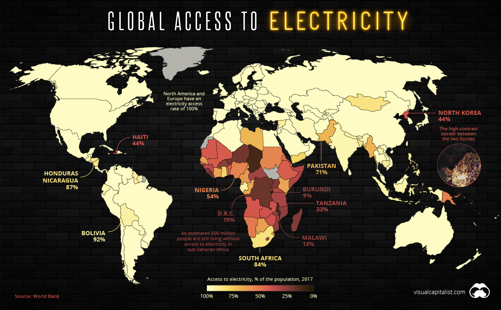
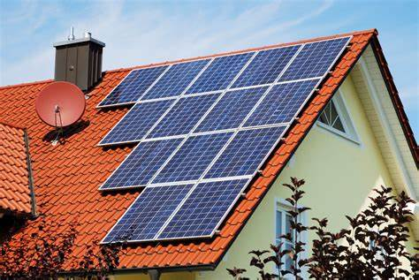
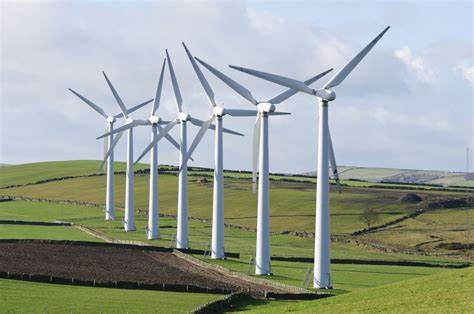
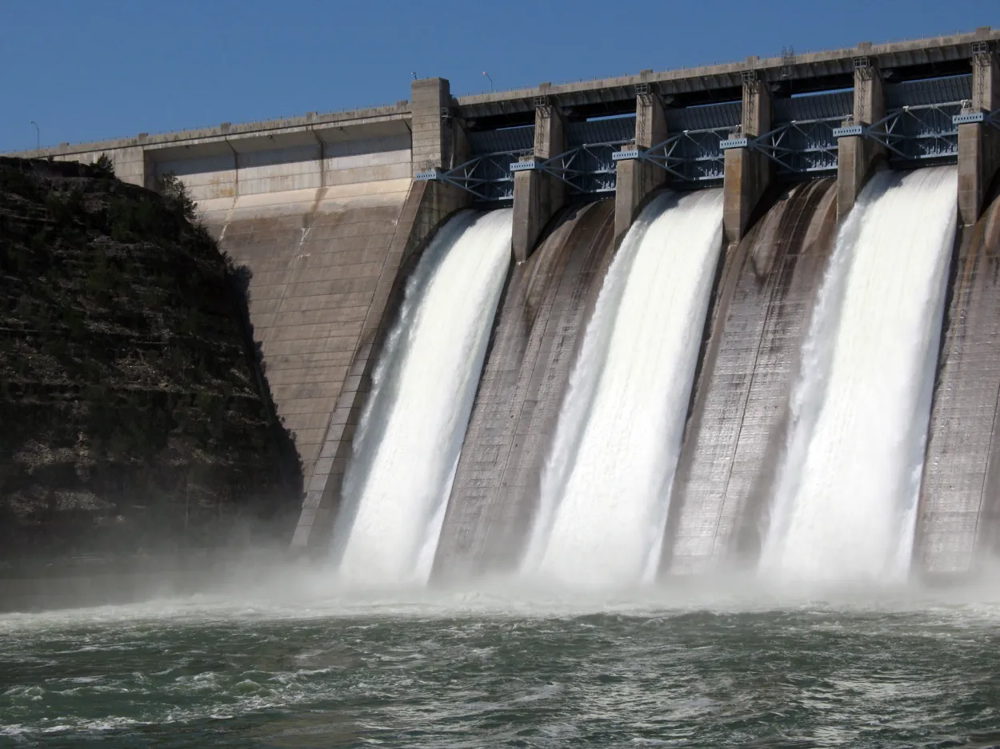
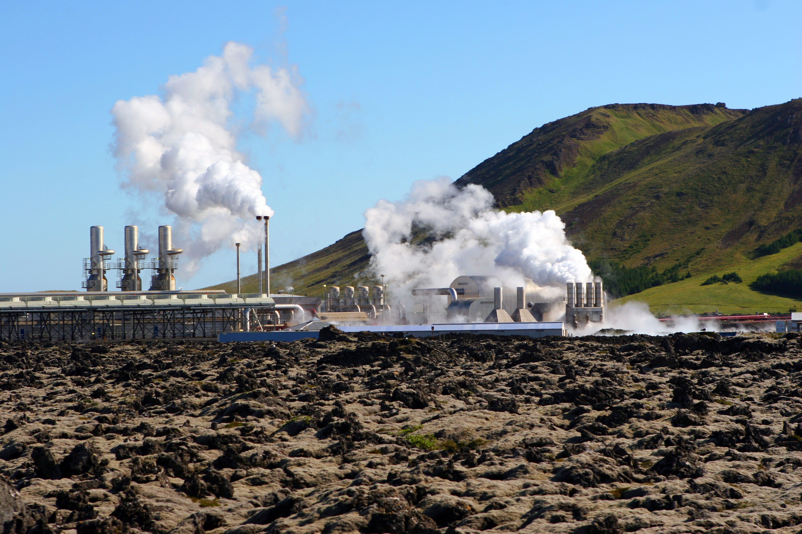

Sustainable Development Goals - UN, adopted in 2015 Ensure that by 2030 all people enjoy peace and prosperity.
SDG7, Affordable and Clean Energy
Make sure that everyone on the planet has access to good energy services
no matter their location, circumstances
goals
By 2030, ensure universal access to affordable, reliable and modern energy services
By 2030, increase substantially the share of renewable energy in the global energy mix
By 2030, enhance international cooperation to facilitate access to clean energy research
and technology, including renewable energy, energy efficiency and advanced and cleaner
fossil-fuel technology, and promote investment in energy infrastructure and clean energy technology
Current situation
Affordable
Least developed countries have worst access to energy
13% of the world's population dosen't have modern electricity services

13 billion people depend on wood/coal for cooking/heating wood,coal is very harmful to environment as they are non-renewable
through affordable and clean energy
help increase economic development
decrease poverty in these countries
Clean
fire stations burn fossil fuels to generate electricity, and in that process a lot of
greenhouse gas is made, including carbon dioxide and methane.
greenhouse gas
->make the atmosphere warm
->contribute to global warming
->causes climate change
->threaten the living things' habitats, including human
What are clean and affordable energies
Solar Energy

energy produced by the sun light or thermal energy.
Photovoltaic (PV) systems capture the energy produced by solar rays within their cells which is then converted into electricity and heating.
The amount of solar energy that can be used depends largely on geographical location, the season of the year, and the time of day.
Wind energy

energy generated via wind turbines.
Wind is another plentiful clean energy resource, harnessed using turbines. When wind blows by the turbines, it causes the blades to rotate and in turn produce electricity.
Hydro energy

energy generated by harnessing the natural flow of water and the tide.
A large reservoir is created with a dam that can be used to control the flow of water. This flow of water causes a water wheel to turn, which leads to the generation of electricity.
Hydro energy can also be harnessed using the natural flow of a river, known as run-of-river hydropower. This method uses a narrow channel to funnel the flow toward a water wheel rather than needing to build a dam.
The electricity created can be stored for later use if demand has already been reached and hydro energy is generally more reliable than both solar and wind energy as it can be used 24/7 in any weather condition.
Geothermal energy

energy generated by harnessing heat produced by the Earth itself.
Geothermal energy is harnessed from heat that has been trapped underneath the Earth’s crust either since its formation or due to radioactive decay. Some of this heat will escape naturally in large quantities, typically in the form of a volcanic eruption or geyser, but it can also be captured manually to produce geothermal energy.
The heated water within a geothermal reservoir is pumped up to a geothermal power plant where it turns into steam, which is then used to operate a turbine to power a generator.
This generator produces electricity for the grid and the steam is cooled back into water and fed back into the geothermal reservoir to be used again and again.
Biomass energy
energy produced by burning biofuel, such as plant matter.
Biomass is organic matter that is typically a by-product of recently living organisms and plants, and can be converted into a solid fuels made of plant material or methane gas.
To create energy that can be converted into practical power supplies, the biomass materials are burned. When heat energy is given off the burning waste it is directed to turbines with pipes.
These pipes then turn a number of blades, turbines and generators – all of which are made from a series of coils and magnets.
This then produces and electrical charge when the magnetic fields producing electricity and being stored as power.